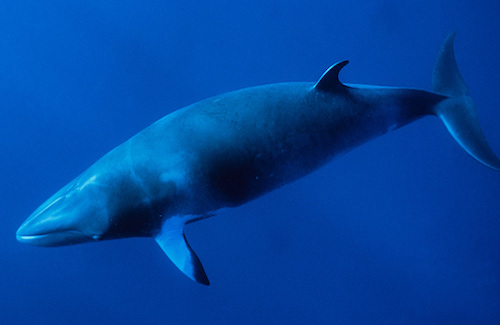

Almost 750,000 fin whales were killed in the Southern Hemisphere between 1904 and 1979 The current population in the North Atlantic probably exceeds 46,000 right now.
The fin whale is the world's second largest animal after the blue whale. They can dive to depths of 230 meters and make low-frequency noises (infrasound) which can be as loud as 188 decibels. These sounds cannot be heard by humans, but can be detected by other fin whales up to 850 km away. When it comes to ecology the fin-whale likes to move up to high latitude feeding grounds during the spring and summer and returns to the southerly temperate waters for mating and calving during the autumn and winter. This species either swims alone or in pairs but the usual group is sized to about 6-7 individuals of a group of 300. They feed by filtering planktonic crustaceans (krill), fish and squid through their baleen plates. They can also take in large volumes of water and food because their pleated grooves in their throats expand. As their mouths close in water is expelled through their baleen palates which traps the food on the inside near the tongue to be swallowed. The Fin-whale mostly habitats open oceans or in shallow coastal waters. Their global distribution occurs in the north pacific, north Atlantic, Indian and Artic oceans and the Mediterranean. But you will rarely see them in the tropical or polar seas. They are placed in 2 main populations which are in the Southern and Northern Hemispheres. They are highly important since they are at the top of the food chain and have an important role in the overall health of the marine environment. Due to commercial Whaling and subsequent decline of the blue whale almost 750,000 fin whales were reported taken from the southern hemisphere alone between 1904-1979. Although commercial whaling is now banned scientists fear that it’s too late for the species to recover. Now we reportedly have fewer than 15,000 fin whales in the southern hemisphere with 40,000 in the northern hemisphere. What IWC is doing to protect the species is by keeping their habitats untouched and to prevent commercial whaling from continuing to decline the remaining fin-wales.
Resulting from poisoning by the diclofenac, a veterinary drug given to livestock which is toxic to vultures, brought declining birth rates there are only 12,000 — 38,000 left and on the decline.
This species of bumble bee is the first native bee species to be listed as endangered in the continental U.S with a population decine of 95% thanks to human activity.
In China, it's vary rare to find these tigers in the wild. There are only around 1,200 giant cats from the Indochinese family left in the world thanks to human hunting and deforestation.